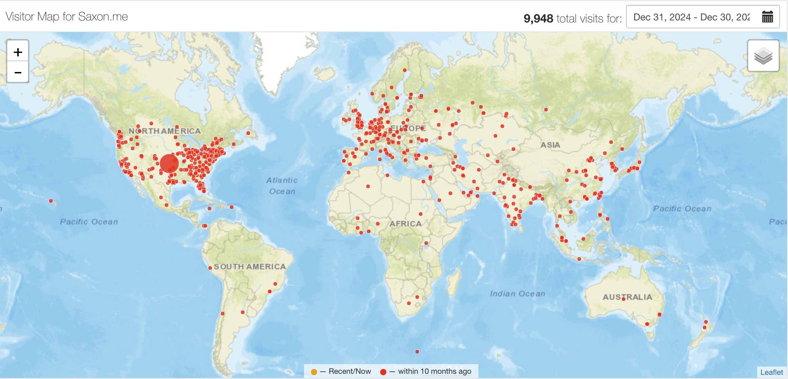

Colophon
A colophonThe term colophon comes from publishing, to describe the pages in the forward of a volume which name where and by whom it was printed, what font it is set in, and other details. is a page that describes how the site is made, with what tools, supporting what technologies. Having the key principles that govern your site in one place means that any user who visits does not need to read through the archives of your site or speak with you to understand what mattered most to you when you constructed your site. —IndieWebCamp
Built from scratch on the west coast by Michael Saxon, from 2017 to today. Heavy Cursor use to build plugins and CSS. Feel free to steal my source on GitHub!

Design¶
The following fonts are used under personal licenses:
- Calluna from exljbris for main body text.
- Berkeley Mono from US Graphics Co. for headers, code blocks, and decorative monospace.
- Univers Next Pro from Cufon fonts for sans serif.
- Triptych Italick from the Pyte Foundry for decorative headers.
The color scheme is based on the Kanagawa Nvim/iTerm theme with slight modifications.
Design inspirations for this site include Justine Zhang's site, GwernI know, cringe... but the pop up footnotes are awesome man! , and US Graphics Co. (if you would believe it).
Stack¶
This webpage is built using Pelican, a Python-based static blog generator. It uses a custom, framework-free Jinja theme with custom Markdown extensions and Pelican plugins.
Plugins¶
infobox: custom infobox styles for quotes (supports GitHub-flavored markdown, examples).
footnote_popups: renders mouseover pop-ups for footnotesLike this! It uses some JS to keep the popup centered over the footnote tag, unless it will fall outside of the bounding box of the main text. .
image_processor: processes post header images: grabs the image linked in the md, and maps it into the site theme colors and compresses it using OpenCV.
dash_shortcuts: converts strings into nice unicode characters, in particular mapping the en-dash -- to – and em-dash --- to —.
smart_quotes: beautify " and ' by converting them to left and right versions in a contextually-appropriate manner. Examples: “double quotes” and ‘single quotes’ get correctly mapped, but contractions aren't changed.
html_comment_sanitizer: completely removes inline HTML comments <!-- --> from rendered HTMLIt's stupid that I even need to implement this...but there are no Markdown-specific ways to write comments, the official way is to just put HTML comments which interacts with dash_shortcuts badly and creates <!&ndash &ndash>, which renders normally instead of being removed. so that comments I put in the files while writing posts aren't leaked.
pelican_bibtex: uses the Python pybtex package to scan a Bibtex file containing all my papers to generate my Publications page. This plugin was inspired by, but is effectively completely different from Vlad Niculae's own pelican-bibtex plugin..
All plugins are CC-BY-SA and accessible from my source github repo.
infobox examples¶
I have implemented default, warning, info, and tip boxes.
This is an ordinary quote.
This is a WARNING.
This is a NOTE.
This is a TIP.
Hosting & Domain¶
The site is hosted for free using GitHub pages. The domain is provided by Namecheap. I am thinking about moving to better providers and aspire to eventually self host, but GH pages is pretty good for static sites.
Privacy¶
For a long time I used Clustrmaps for visitor tracking. While obviously, any free service for this sort of thing will be using it for data gathering, I didn't realize quite how nasty Clustrmaps is. Beyond just a run-of-the-mill databroker, it actually uses its data to power a by-name people search service which correlates IPs to addresses.
I got rid of it in October 2025. I want to eventually roll my own visitor tracker (shouldn't be too hard) but that's a project for another time. For posterity, here's the state of the visitor map when I took it down:
